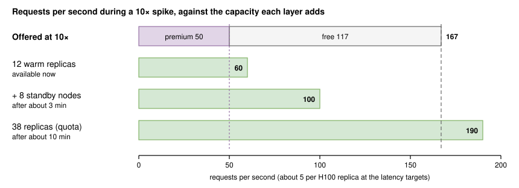
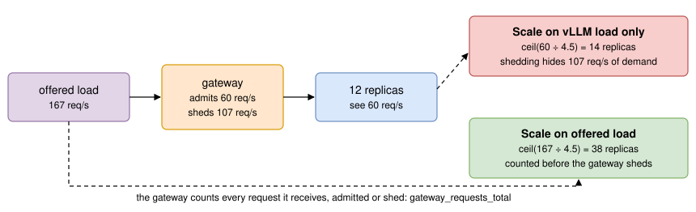
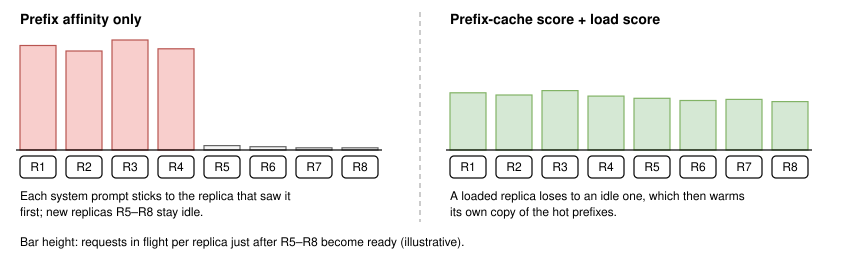
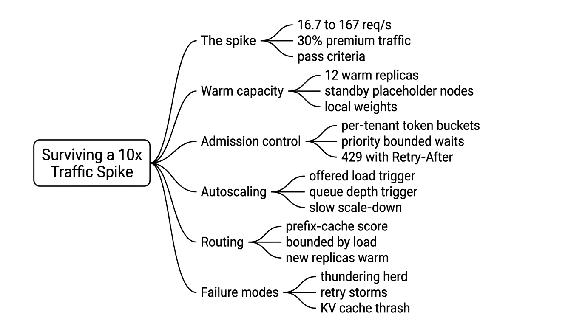

Lab - Surviving a 10x Traffic Spike
Introduction
A product launch, a viral post, or one large customer switching on a batch job can multiply traffic tenfold in a minute. An LLM fleet cannot simply absorb that. A new GPU replica takes minutes to start, the KV cache of each running replica is finite, and every request admitted beyond capacity slows down every other request on the same GPU. Without a plan, p99 latency explodes for everyone, retries pile on, and the spike becomes an outage.
The goal of this lab is a serving setup that survives a 10× spike without letting the latency of admitted requests explode, and a test that proves it. No single mechanism is enough, so we build layers: warm capacity that is already running, standby nodes that start fast, admission control that sheds the excess quickly and fairly, an autoscaler that sees the real demand, and a router that keeps prefix caches useful while new replicas join. Figure 1 shows the setup.
![A load generator sends traffic that ramps from 16.7 to 167 requests per second to an admission gateway with per-tenant rate limits, a priority queue, a bounded wait, and 429 responses. Admitted requests go to a router that scores replicas by prefix-cache hits and load, and from there to vLLM replicas with one H100 each: 12 warm replicas that can grow to 38, plus standby nodes held by placeholder pods. Prometheus scrapes the gateway and the replicas; the gateway reads the replica count from it; KEDA queries it and scales the replicas.](images/027-setup.svg)
In this lab, we define the spike and the pass criteria, deploy replicas with warm capacity and fast cold starts (Lesson 23, Cold Starts), put an admission gateway with rate limits, priority, and load shedding in front (Lesson 26, Rate Limiting), autoscale on queue depth and offered load with KEDA (Lesson 22, Autoscaling), route with cache affinity bounded by load (Lesson 25, Request Routing), and then drive a 10× spike through it all and read the results.
What You Need
| Small path | Full path | |
|---|---|---|
| Hardware | One GPU with 16–24 GB (an L4 or a consumer card) | A Kubernetes cluster with up to 38 H100 nodes, or a quarter-scale version with 10 |
| Software | vLLM (Linux, or WSL2 on Windows), Python 3.10+ with fastapi, uvicorn, httpx, prometheus-client | The same, plus the NVIDIA GPU Operator, Prometheus, and KEDA 2.21 |
| Model | Qwen2.5-1.5B-Instruct | Llama 3.1 8B Instruct |
| What you can test | Rate limits, priority, shedding | All layers, including autoscaling and routing |
| Cost | Your own hardware | About $120 for one hour at full scale, or about $30 at quarter scale, assuming $3.00 per H100-hour |
Table 1: Two ways to run this lab. GPU prices are an assumption.
On the small path, run one vLLM replica, start the gateway with SLOTS_PER_REPLICA=20 (Lesson 21's calculator gives about 1.6 requests per second and a batch near 20 for Qwen2.5-1.5B on an L4 at 25 ms per token), and run the load generator with --base 0.3 so that the spike reaches 3 requests per second, about twice what the GPU can serve. To run the full path at quarter scale, divide the rates, replica counts, and placeholder count below by four.
Step 1: Define the Spike and the Pass Criteria
The traffic
We use the course's running example: Llama 3.1 8B on H100s, chat requests of about 2,000 prompt tokens and 500 output tokens, and an average of 1,000 requests per minute (16.7 per second). A launch spike multiplies the average by 10, to 167 requests per second, ramping up in one minute and holding for fifteen. Thirty percent of the traffic comes from two premium tenants and seventy percent from 200 free-tier tenants. Every request shares one of eight long system prompts, about 1,600 tokens, so prefix caching matters (Lesson 24, Prefix Caching).
One H100 serves about 5 requests per second at the running-example targets of p95 TTFT ≤ 500 ms and p95 TPOT ≤ 25 ms (Lesson 19, GPU Utilization; Lesson 21's calculator gives 5.7 at the limit). The full spike therefore needs about 34 replicas at the limit, or 38 at a planned 4.5 requests per second each. The fleet normally runs far fewer, so the question is what happens in the minutes before capacity arrives.
Capacity in layers
Figure 2 puts the layers on one scale. We keep 12 warm replicas at all times, 60 requests per second, which covers the premium tenants' 50 requests per second even at 10×. Eight standby nodes, held by placeholder pods, can host 8 more replicas within about 3 minutes. The remaining 18 replicas need new nodes and arrive after about 10 minutes. Both start times are assumptions; measure yours as in Lesson 23. Until capacity catches up, the gateway must shed the difference.

At 5 requests per second per replica, the arithmetic of the first quarter hour is: 64% of requests shed while 12 replicas serve 60 of 167; 40% shed once 20 replicas serve 100; almost none once all 38 are ready. All of the shedding should fall on the free tier.
Pass criteria
The test passes only if every criterion in Table 2 holds. They protect the requests we admit, protect premium tenants, keep failures fast and explicit, and bound how long the degraded period lasts.
| Criterion | Target | Measured from |
|---|---|---|
| TTFT of admitted requests, every minute | p95 ≤ 500 ms and p99 ≤ 1 s | Load generator |
| Decode speed of admitted requests | p95 TPOT ≤ 25 ms; p99 inter-token latency ≤ 100 ms | Load generator and vLLM histograms |
| Premium shed rate over the whole test | ≤ 1% | Load generator |
| Shed requests | 429 with Retry-After, within the queue's wait limit | Load generator |
| Other errors (5xx, timeouts) | 0 | Load generator |
| Recovery time: shed rate below 5% and TTFT targets met for 3 minutes in a row | ≤ 15 minutes after the spike starts | Load generator and Prometheus |
| Preemptions | Near zero | vllm:num_preemptions_total |
| Scale-down after the spike | No more than one change of direction | Replica count |
Table 2: Pass criteria for the spike test
The p99 inter-token limit is four times the 25 ms TPOT target because individual gaps are longer when a decode step also carries a prefill chunk (Lesson 7, Continuous Batching); the limit catches stalls a user would notice, not normal variation.
Step 2: Warm Capacity and Fast Cold Starts
The deployment encodes three decisions. First, each replica takes no more work than it can serve within the targets: --max-num-seqs 56 caps its running batch near Lesson 19's 53 streams, far below the roughly 170 requests its KV cache could hold, so the cache never thrashes. Second, --max-num-queued-reqs 80 bounds the requests in flight per replica, running plus waiting; beyond it vLLM answers 503 at once instead of queueing without limit [8]. Third, --scheduling-policy priority lets the gateway mark premium requests so that vLLM schedules them first. Recent vLLM releases default --gpu-memory-utilization to 0.92; we set 0.90 explicitly to match Lesson 3.
For start-up time, the weights live on each node's local NVMe and the image is already on the node, so a new replica skips the slowest parts of a cold start (Lesson 23). The startup probe allows up to 10 minutes for loading and warm-up, and the readiness probe keeps a replica out of rotation until /health answers. The second tab keeps standby nodes warm with the Kubernetes overprovisioning pattern: low-priority placeholder pods hold GPU nodes, and any real replica preempts them [7]. The placeholders run the vLLM image, so the image is already pulled when a replica lands there. Faster weight loading, such as --load-format runai_streamer [10], helps nodes that must start from remote storage.
apiVersion: apps/v1
kind: Deployment
metadata:
name: llama-8b-chat
namespace: inference
spec:
replicas: 12 # KEDA owns this from Step 4 on
selector:
matchLabels:
app: llama-8b-chat
template:
metadata:
labels:
app: llama-8b-chat
spec:
terminationGracePeriodSeconds: 120 # let streams finish on scale-down (Lesson 40)
containers:
- name: vllm
image: vllm/vllm-openai:v0.32.0
command: ["/bin/sh", "-c"]
args:
- >-
exec vllm serve meta-llama/Llama-3.1-8B-Instruct
--gpu-memory-utilization 0.90
--max-model-len 4096
--max-num-seqs 56
--max-num-queued-reqs 80
--scheduling-policy priority
env:
- name: HF_HUB_OFFLINE # weights are already on the node (Lesson 23)
value: "1"
ports:
- containerPort: 8000
startupProbe: # allow up to 10 minutes to load and warm up
httpGet:
path: /health
port: 8000
periodSeconds: 10
failureThreshold: 60
readinessProbe:
httpGet:
path: /health
port: 8000
periodSeconds: 5
resources:
limits:
nvidia.com/gpu: 1
volumeMounts:
- name: hf-cache
mountPath: /root/.cache/huggingface
volumes:
- name: hf-cache # local NVMe copy of the weights on every GPU node
hostPath:
path: /mnt/nvme/hf-cacheWhat you should see: kubectl get pods -n inference lists 12 vLLM pods and 8 gpu-placeholder pods, each on its own GPU node. Delete one vLLM pod and time how long its replacement takes to become Ready; that number replaces the 3-minute assumption in Figure 2.
Step 3: Admission Control: Rate Limits, Priority, and Load Shedding
When demand exceeds capacity, some requests will not be served promptly no matter what we do. The only choice is between serving everyone slowly, which breaks the SLO for all of them, and serving some requests well while refusing the rest quickly. Load shedding makes that choice explicit [1][2]. Figure 3 shows the gateway's decision for each request.
![A request with an x-tenant-id header first meets its tenant's token bucket; if the bucket is empty, it gets 429 rate_limited with Retry-After set to the refill time. Next, if a slot is free, the request is forwarded to the router with vLLM priority 0 for premium or 1 for free, and the slot is released when the stream ends. If no slot is free and the tier's queue is full, it gets 429 shed with Retry-After of 2 seconds. Otherwise it waits up to 0.6 s for premium or 0.3 s for free; if a slot arrives it is forwarded, and if not it is shed.](images/027-admission-flow.svg)
- Per-tenant token buckets enforce each tenant's quota (Lesson 26). They protect tenants from each other, for example from one runaway script, but they are not a capacity defense: in a broad spike, every tenant can be under its quota while the fleet is far over capacity.
- A bounded pool of slots, 56 per ready replica, is the capacity defense. The gateway resizes the pool every 5 seconds from the replica count in Prometheus, so new replicas add slots as soon as they report metrics.
- Priority with bounded waits. Premium requests wait ahead of free ones and may wait up to 0.6 s; free requests wait at most 0.3 s. The waits are short enough that an admitted request still meets the 1 s p99 TTFT target. A request that cannot get a slot in time gets a fast 429 instead of a slow answer.
- Explicit refusals. HTTP 429 (Too Many Requests) with a
Retry-Afterheader tells well-behaved clients when to come back [12][13]. A 503 from a replica's own queue limit becomes a 429 as well.
The gateway counts every outcome in gateway_requests_total and exposes its queue in gateway_queue_waiting; Step 4 depends on both. Run it as a single process (uvicorn admission:app --host 0.0.0.0 --port 8080), because the buckets and slots live in memory; a production gateway would keep them in a shared store or shard tenants across instances.
"""admission.py: per-tenant rate limits, priority, and load shedding in front of vLLM (Lesson 27)."""
import asyncio
import heapq
import math
import os
import time
from contextlib import asynccontextmanager
import httpx
from fastapi import FastAPI, Request
from fastapi.responses import JSONResponse, StreamingResponse
from prometheus_client import Counter, Gauge, make_asgi_app
UPSTREAM = os.environ.get("UPSTREAM", "http://llm-gateway.inference.svc") # Step 5
PROM = os.environ.get("PROM", "http://prometheus.monitoring.svc:9090")
SLOTS_PER_REPLICA = int(os.environ.get("SLOTS_PER_REPLICA", "56")) # = --max-num-seqs: ~53 streams + headroom
# tier: (vLLM priority, tenant requests/s, tenant burst, max waiting, max wait in seconds)
TIERS = {"premium": (0, 20.0, 40, 400, 0.6), # waits stay well inside the 1 s p99 TTFT target
"free": (1, 2.0, 4, 100, 0.3)}
TENANT_TIER = {"acme": "premium", "globex": "premium"} # every other tenant is "free"
REQUESTS = Counter("gateway_requests", "Requests by tier and outcome", ["tier", "outcome"])
WAITING = Gauge("gateway_queue_waiting", "Requests waiting for a slot", ["tier"])
INFLIGHT = Gauge("gateway_inflight", "Requests holding a slot")
CAPACITY = Gauge("gateway_capacity", "Slots across the replicas Prometheus can see")
class TokenBucket:
def __init__(self, rate: float, burst: int):
self.rate, self.burst = rate, burst
self.tokens, self.stamp = float(burst), time.monotonic()
def take(self) -> float:
"""Spend one token: 0.0 if allowed, else the seconds until one is available."""
now = time.monotonic()
self.tokens = min(self.burst, self.tokens + (now - self.stamp) * self.rate)
self.stamp = now
if self.tokens >= 1:
self.tokens -= 1
return 0.0
return (1 - self.tokens) / self.rate
class PrioritySlots:
"""A semaphore that serves waiters by priority, with bounded queues and wait times."""
def __init__(self, capacity: int):
self.capacity, self.used, self.seq = capacity, 0, 0
self.heap: list[tuple[int, int, asyncio.Future]] = []
self.waiting = {tier: 0 for tier in TIERS}
def resize(self, capacity: int) -> None:
self.capacity = capacity
self._wake()
def _wake(self) -> None:
while self.heap and self.used < self.capacity:
_, _, fut = heapq.heappop(self.heap)
if not fut.done(): # skip waiters that already gave up
self.used += 1 # hand the slot straight to the waiter
fut.set_result(True)
async def acquire(self, tier: str) -> bool:
priority, _, _, max_waiting, max_wait = TIERS[tier]
if self.used < self.capacity and not self.heap:
self.used += 1
return True
if self.waiting[tier] >= max_waiting:
return False # queue full: shed immediately
self.seq += 1
fut = asyncio.get_running_loop().create_future()
heapq.heappush(self.heap, (priority, self.seq, fut))
self.waiting[tier] += 1
WAITING.labels(tier).inc()
try:
await asyncio.wait_for(asyncio.shield(fut), max_wait)
return True
except asyncio.TimeoutError:
if fut.done(): # a slot arrived just as we gave up: keep it
return True
fut.cancel()
return False # waited too long: shed
finally:
self.waiting[tier] -= 1
WAITING.labels(tier).dec()
def release(self) -> None:
self.used -= 1
self._wake()
slots = PrioritySlots(SLOTS_PER_REPLICA)
buckets: dict[str, TokenBucket] = {}
client = httpx.AsyncClient(base_url=UPSTREAM, timeout=httpx.Timeout(None, connect=5.0))
async def track_replicas() -> None:
"""Grow and shrink the slot pool with the number of replicas that report metrics."""
async with httpx.AsyncClient(base_url=PROM, timeout=5.0) as prom:
while True:
try:
r = await prom.get("/api/v1/query", params={"query": "count(vllm:num_requests_running)"})
result = r.json()["data"]["result"]
if result:
slots.resize(SLOTS_PER_REPLICA * int(float(result[0]["value"][1])))
CAPACITY.set(slots.capacity)
except (httpx.HTTPError, KeyError, ValueError):
pass # keep the last known size
await asyncio.sleep(5)
@asynccontextmanager
async def lifespan(app: FastAPI):
task = asyncio.create_task(track_replicas())
yield
task.cancel()
await client.aclose()
app = FastAPI(lifespan=lifespan)
app.mount("/metrics", make_asgi_app())
def too_many(tier: str, outcome: str, retry_after: float) -> JSONResponse:
REQUESTS.labels(tier, outcome).inc()
return JSONResponse({"error": {"type": outcome, "message": "Too many requests"}}, status_code=429,
headers={"Retry-After": str(max(1, math.ceil(retry_after)))})
@app.post("/v1/chat/completions")
async def chat(request: Request):
tenant = request.headers.get("x-tenant-id", "anonymous")
tier = TENANT_TIER.get(tenant, "free")
priority, rate, burst, _, _ = TIERS[tier]
body = await request.json()
wait = buckets.setdefault(tenant, TokenBucket(rate, burst)).take()
if wait > 0:
return too_many(tier, "rate_limited", wait) # over this tenant's quota
if not await slots.acquire(tier):
return too_many(tier, "shed", 2) # the fleet is full: fail fast
body["priority"] = priority # vLLM --scheduling-policy priority
INFLIGHT.inc()
def done() -> None:
INFLIGHT.dec()
slots.release()
try:
upstream = await client.send(client.build_request("POST", "/v1/chat/completions", json=body),
stream=True)
except httpx.HTTPError:
done()
REQUESTS.labels(tier, "upstream_error").inc()
return JSONResponse({"error": {"type": "upstream_error"}}, status_code=502)
if upstream.status_code == 503: # a replica's --max-num-queued-reqs backstop
await upstream.aclose()
done()
return too_many(tier, "shed", 2)
REQUESTS.labels(tier, "admitted").inc()
async def relay():
try:
async for chunk in upstream.aiter_raw():
yield chunk
finally:
await upstream.aclose()
done()
return StreamingResponse(relay(), status_code=upstream.status_code,
media_type=upstream.headers.get("content-type"))What you should see: with no load, a burst of 8 requests from one free tenant returns four 200s and then four 429s, because its bucket holds 4 tokens. curl localhost:8080/metrics/ shows gateway_requests_total{outcome="rate_limited",tier="free"} 4.0.
Step 4: Autoscale on Queue Depth and Offered Load
Lesson 22 explains why GPU utilization is a poor scaling signal for LLM serving and why queue depth is a good one. Our admission layer adds a twist, shown in Figure 4: once the gateway sheds, vLLM sees only the admitted 60 requests per second. An autoscaler that watches only vLLM would ask for ⌈60 ÷ 4.5⌉ = 14 replicas and stop there, while 107 requests per second are being refused. Shedding hides demand, so the autoscaler must watch the load offered to the gateway, counted before shedding.

The ScaledObject has two Prometheus triggers [4]. The first divides the offered request rate, excluding requests refused for exceeding their tenant's quota, by a target of 4.5 requests per second per replica. The second divides the waiting requests at the gateway and inside vLLM by 10 per replica, which reacts within seconds when a queue starts to form. With the default AverageValue metric type, KEDA asks for ⌈total ÷ threshold⌉ replicas, and the HPA follows whichever trigger asks for more [5][6]. KEDA's cooldownPeriod applies only to scaling to zero, so the scale-down pacing lives in the HPA behavior: double at most every 15 seconds on the way up, and on the way down wait 10 minutes, then remove at most 2 replicas every 2 minutes.
apiVersion: keda.sh/v1alpha1
kind: ScaledObject
metadata:
name: llama-8b-chat
namespace: inference
spec:
scaleTargetRef:
name: llama-8b-chat
minReplicaCount: 12 # warm capacity: 12 x 5 req/s covers 10x premium traffic
maxReplicaCount: 38 # GPU quota: 38 x 4.5 req/s covers the 10x spike
pollingInterval: 5
advanced:
horizontalPodAutoscalerConfig:
behavior:
scaleUp:
stabilizationWindowSeconds: 0
policies:
- type: Percent
value: 100 # at most double every 15 s
periodSeconds: 15
scaleDown:
stabilizationWindowSeconds: 600 # 10 minutes of lower demand before removing GPUs
policies:
- type: Pods
value: 2
periodSeconds: 120
triggers:
- type: prometheus # offered load, counted before shedding
metadata:
serverAddress: http://prometheus.monitoring.svc:9090
query: sum(rate(gateway_requests_total{outcome!="rate_limited"}[1m]))
threshold: "4.5" # requests/s per replica (Lessons 19 and 21)
- type: prometheus # queue depth at the gateway and inside vLLM
metadata:
serverAddress: http://prometheus.monitoring.svc:9090
query: sum(gateway_queue_waiting) + sum(vllm:num_requests_waiting)
threshold: "10" # waiting requests per replicaWhat you should see: kubectl get hpa -n inference shows keda-hpa-llama-8b-chat with two external metrics. At the baseline it holds 12 replicas, the minimum. During the spike the offered load reaches about 167 requests per second, or 167 ÷ 4.5 ≈ 37.1 replicas' worth, so the HPA requests the maximum, 38.
Step 5: Route with Cache Affinity, Bounded by Load
With eight shared system prompts of about 1,600 tokens, a request that lands on a replica already holding its prefix skips most of its prefill. Lesson 21's capacity model, with prefill cut to the 400 uncached tokens of a 2,000-token prompt, gives about 9.6 requests per second per replica at 25 ms per token instead of 5.7. Cache hits are capacity, which is why routing matters most during a spike.
Pure prefix affinity fails in exactly this situation, as Figure 5 shows. If each prompt sticks to the replica that first cached it, the eight hot prompts pin their traffic to a handful of replicas, and the replicas the autoscaler just added stay idle. A router has to trade cache affinity against load, the same trade that consistent hashing with bounded loads makes for web caches [14]. The Gateway API Inference Extension's endpoint picker does this by scoring every replica on prefix-cache hits, queue length, and KV cache use, and picking the best weighted sum [11]. With the weights below, a replica holding the prefix wins until its queue and cache fill, and then an idle replica wins and warms its own copy.

apiVersion: inference.networking.x-k8s.io/v1alpha1
kind: EndpointPickerConfig
plugins:
- type: queue-scorer
- type: kv-cache-utilization-scorer
- type: prefix-cache-scorer
schedulingProfiles:
- name: default
plugins:
- pluginRef: queue-scorer
weight: 2
- pluginRef: kv-cache-utilization-scorer
weight: 2
- pluginRef: prefix-cache-scorer
weight: 3This configuration is the one used in Istio's guide to the Inference Extension, which also shows how to deploy the endpoint picker with --config-file and an InferencePool for the vLLM pods [11]. Lesson 25 compares it with other routers. Whatever you use, check two things in the test: the fleet-wide prefix cache hit rate should recover within a few minutes of new replicas joining, and no replica should run with a long queue while another sits idle.
Step 6: Generate the Spike
The load generator must be open-loop: it sends requests on a schedule whether or not earlier ones have finished, as real users do. A closed-loop tool with a fixed number of virtual users slows down when the server slows down and hides the overload (Lesson 21). The script below draws Poisson arrivals from a schedule (5 minutes at the baseline, a 1-minute ramp to 10×, 15 minutes at the peak, a 5-minute ramp down, and 10 minutes of cool-down), streams every response, and records TTFT, per-request TPOT and p99 inter-token gap, and status for each request. It does not retry 429s; it measures them. At the end it prints a per-minute table and checks the criteria of Table 2. k6's ramping-arrival-rate executor can produce the same arrival schedule [15], but it cannot time the first token of a stream, which this test needs.
"""spike.py: open-loop chat load with a 10x spike; records TTFT, ITL, and status per request (Lesson 27)."""
import argparse
import asyncio
import csv
import json
import random
import time
import httpx
PRODUCTS = [f"You are the support assistant for product {i}. " + "Follow the policy. " * 400 for i in range(8)]
WORDS = "order refund invoice delivery account password upgrade cancel warranty login error".split()
PREMIUM = ["acme", "globex"] # 30% of traffic
FREE = [f"free-{i}" for i in range(200)] # 70% of traffic
def rate_at(t: float, a) -> float:
"""Requests per second at t seconds: baseline, ramp to the peak, hold, ramp down, baseline."""
peak = a.base * a.factor
for length, start, end in ((a.warm, a.base, a.base), (a.ramp, a.base, peak),
(a.hold, peak, peak), (a.down, peak, a.base)):
if t < length:
return start + (end - start) * t / length
t -= length
return a.base
def pct(xs: list, q: float) -> float:
xs = sorted(xs)
return xs[min(len(xs) - 1, int(q * len(xs)))] if xs else float("nan")
async def one(client: httpx.AsyncClient, a, t_sent: float, rows: list) -> None:
premium = random.random() < 0.3
tenant = random.choice(PREMIUM if premium else FREE)
ticket = " ".join(random.choices(WORDS, k=300))
body = {"model": a.model, "stream": True, "max_tokens": a.max_tokens, "ignore_eos": True,
"messages": [{"role": "system", "content": random.choice(PRODUCTS)},
{"role": "user", "content": ticket}]}
start = time.perf_counter()
first = last = None
gaps, status, error = [], 0, ""
try:
async with client.stream("POST", "/v1/chat/completions", json=body,
headers={"x-tenant-id": tenant}) as r:
status = r.status_code
if status != 200:
await r.aread()
else:
async for line in r.aiter_lines():
if not line.startswith("data: ") or line == "data: [DONE]":
continue
choices = json.loads(line[6:]).get("choices") or [{}]
if not choices[0].get("delta", {}).get("content"):
continue
now = time.perf_counter()
if first is None:
first = now
else:
gaps.append(now - last)
last = now
except httpx.HTTPError as e:
error = type(e).__name__
rows.append((round(t_sent, 3), tenant, "premium" if premium else "free", status, error,
None if first is None else round(first - start, 4),
round(time.perf_counter() - start, 4), len(gaps) + (first is not None),
round(pct(gaps, 0.99), 4) if gaps else None))
def report(rows: list, a) -> None:
minutes = {}
for t, _, tier, status, error, ttft, *_ in rows:
m = minutes.setdefault(int(t // 60), {"n": 0, "shed": 0, "bad": 0, "ttft": []})
m["n"] += 1
m["shed"] += status == 429
m["bad"] += bool(error) or status not in (200, 429)
if status == 200 and ttft is not None:
m["ttft"].append(ttft)
print("min offered shed% errors p95/p99 TTFT of admitted")
recovered_at, streak = None, 0
for k in sorted(minutes):
m = minutes[k]
shed, p95, p99 = m["shed"] / m["n"], pct(m["ttft"], 0.95), pct(m["ttft"], 0.99)
print(f"{k:3d} {m['n'] / 60:7.1f}/s {shed:6.1%} {m['bad']:7d} {p95:8.2f} s {p99:6.2f} s")
ok = shed < 0.05 and p95 <= a.ttft_p95 and p99 <= a.ttft_p99
streak = streak + 1 if ok and k * 60 >= a.warm + a.ramp else 0
if streak == 3 and recovered_at is None:
recovered_at = (k - 2) * 60 - a.warm
ok_rows = [r for r in rows if r[3] == 200 and r[5] is not None and r[7] > 1]
tpot = [(r[6] - r[5]) / (r[7] - 1) for r in ok_rows]
premium = [r for r in rows if r[2] == "premium"]
ttft_ok = all(pct(m["ttft"], 0.95) <= a.ttft_p95 and pct(m["ttft"], 0.99) <= a.ttft_p99
for m in minutes.values() if m["ttft"])
checks = {
"admitted TTFT: p95 and p99 within target in every minute": ttft_ok,
"admitted p95 TPOT within target": pct(tpot, 0.95) <= a.tpot_p95,
"admitted p99 ITL within target (per-request p99s)":
pct([r[8] for r in ok_rows if r[8] is not None], 0.99) <= a.itl_p99,
"premium shed rate at most 1%": sum(r[3] == 429 for r in premium) <= 0.01 * len(premium),
"no errors other than 429": sum(m["bad"] for m in minutes.values()) == 0,
"recovered within 15 minutes of the spike": recovered_at is not None and recovered_at <= 900,
}
for name, passed in checks.items():
print(f"{'PASS' if passed else 'FAIL'} {name}")
print(f"recovery time: {recovered_at if recovered_at is not None else 'not reached'} s")
async def main() -> None:
ap = argparse.ArgumentParser()
ap.add_argument("--url", default="http://localhost:8080")
ap.add_argument("--model", default="meta-llama/Llama-3.1-8B-Instruct")
ap.add_argument("--base", type=float, default=16.7, help="baseline requests per second")
ap.add_argument("--factor", type=float, default=10.0, help="spike multiplier")
ap.add_argument("--warm", type=float, default=300)
ap.add_argument("--ramp", type=float, default=60)
ap.add_argument("--hold", type=float, default=900)
ap.add_argument("--down", type=float, default=300)
ap.add_argument("--cool", type=float, default=600)
ap.add_argument("--max-tokens", type=int, default=500)
ap.add_argument("--ttft-p95", type=float, default=0.5)
ap.add_argument("--ttft-p99", type=float, default=1.0)
ap.add_argument("--tpot-p95", type=float, default=0.025)
ap.add_argument("--itl-p99", type=float, default=0.1)
ap.add_argument("--out", default="spike.csv")
a = ap.parse_args()
rows, tasks = [], set()
limits = httpx.Limits(max_connections=None, max_keepalive_connections=None)
async with httpx.AsyncClient(base_url=a.url, timeout=httpx.Timeout(120.0), limits=limits) as client:
t0 = time.perf_counter()
total = a.warm + a.ramp + a.hold + a.down + a.cool
while (t := time.perf_counter() - t0) < total:
task = asyncio.create_task(one(client, a, t, rows))
tasks.add(task)
task.add_done_callback(tasks.discard)
await asyncio.sleep(random.expovariate(rate_at(t, a))) # Poisson arrivals
await asyncio.gather(*tasks)
with open(a.out, "w", newline="") as f:
w = csv.writer(f)
w.writerow(["t_sent", "tenant", "tier", "status", "error", "ttft_s", "e2e_s", "tokens", "itl_p99_s"])
w.writerows(sorted(rows, key=lambda r: r[0]))
report(rows, a)
if __name__ == "__main__":
asyncio.run(main())Run the load generator from a machine close to the cluster with enough CPU to hold a couple of thousand open streams; at the peak, up to about 167 × 10.6 s ≈ 1,800 streams are open at once by Little's law. If the generator's own CPU saturates, its TTFT measurements become meaningless.
Reading the Results
Figure 6 shows the shape a passing run should have. It is illustrative: the curves are drawn from the assumptions of Step 1, not measured. Your run supplies the real timings, and the most important ones are how long the standby and new-node replicas take to become ready.
![Five stacked panels over 40 minutes, with the spike from minute 5 to minute 26. Traffic: offered load ramps from 16.7 to 167 requests per second, while capacity at 5 requests per second per replica steps from 60 to 100 at about minute 8.5 and to 190 at about minute 16. Replicas: 12, then 20, then 38, with a slow scale-down starting at minute 36. Queue: waiting requests jump to the queue caps at the spike and fall to near zero once all replicas are ready. Shed: 64% of requests at first, 40% after the standby replicas join, about 0% after minute 16. p99 TTFT of admitted requests stays near 0.3 s with short bumps up to about 0.9 s as new replicas take their first prefills, below the 1 s target. All curves are illustrative.](images/027-spike-timeline.svg)
- The admitted latency stays flat while the shed rate absorbs the spike. That is the design working: latency is protected, and overload shows up as explicit 429s. If instead the p99 TTFT climbs and the shed rate stays low, the slot pool is too large or the queue waits too long.
- Premium traffic is never shed. If it is, the warm capacity is smaller than premium demand at 10×, or premium requests are queuing behind free ones somewhere other than the gateway; check that vLLM runs with the priority policy.
- Recovery time is set by cold starts. In Figure 6 the shed rate falls in two steps, when standby replicas and then new-node replicas become ready. Shortening either step (Lesson 23) shortens the degraded period more than any other change.
- The queue stays bounded. A queue that grows without limit means requests are waiting somewhere without a deadline.
The per-minute table from spike.py covers the client's view. The PromQL below gives the fleet's view of the same run from vLLM's metrics [9] and the gateway's; Lab 32 turns these queries into a dashboard.
# Shed fraction by tier
sum by (tier) (rate(gateway_requests_total{outcome="shed"}[1m]))
/ sum by (tier) (rate(gateway_requests_total[1m]))
# Replicas reporting metrics, and requests waiting anywhere
count(vllm:num_requests_running)
sum(gateway_queue_waiting) + sum(vllm:num_requests_waiting)
# Server-side p99 TTFT and inter-token latency (admitted requests only)
histogram_quantile(0.99, sum by (le) (rate(vllm:time_to_first_token_seconds_bucket[1m])))
histogram_quantile(0.99, sum by (le) (rate(vllm:inter_token_latency_seconds_bucket[1m])))
# Preemptions, KV cache use, and prefix cache hit rate
sum(rate(vllm:num_preemptions_total[1m]))
max(vllm:kv_cache_usage_perc)
sum(rate(vllm:prefix_cache_hits_total[1m])) / sum(rate(vllm:prefix_cache_queries_total[1m]))Compare the server-side p99 TTFT with the client's. The difference is time spent waiting in the gateway plus the network; if it is large, the gateway queue waits too long, even though vLLM looks healthy.
Common Pitfalls
Spike tests usually fail through one of four feedback loops, shown in Figure 7.
![Four panels. Thundering herd: many queued requests rush to a new replica with a cold cache at once, and its TTFT spikes; fix with load-aware routing, a max-num-seqs cap, and warm-up before readiness. Retry storm: first tries, retries, and retries of retries stack up into several times the original load; fix by honoring Retry-After with jittered backoff and retry budgets. KV cache thrash: a full KV cache forces preemptions and recomputed prefills; fix by keeping max-num-seqs inside the cache and watching preemptions. Autoscaler flapping: replicas zigzag up and down without ever warming up; fix with a scale-down stabilization window and rate-limited scale-down.](images/027-failure-modes.svg)
- Thundering herd on new replicas. When a replica becomes ready, a naive router sends it the whole backlog. Every request on it starts with a prefill against a cold cache, so its TTFT spikes just as it joins. The slot cap,
--max-num-seqs, and a load term in the router spread the backlog. - Retry storms. Clients that retry a 429 immediately turn one refused request into several, at the worst possible moment. Honor
Retry-After, back off exponentially with jitter, and cap retries with a budget [3]. Test with your real SDKs, whose default retry policies are often more aggressive than you expect. - KV cache thrash. Admitting more sequences than the cache holds makes vLLM preempt and recompute requests (Lesson 3). Throughput drops just when it is needed most. Any rise in
vllm:num_preemptions_totalduring the test is a failure. - Autoscaler flapping. If the queue drains, a queue-only trigger asks for fewer replicas, the queue grows again, and replicas are added back. Each cycle pays a cold start. The offered-load trigger and the 10-minute scale-down window prevent it.
- Shedding that hides demand. Covered in Step 4: scale on what users ask for, not on what you admit.
- Scaling down too fast after the spike. Removing replicas with streams in flight cuts users off. Give pods time to drain and finish streams before they stop (Lesson 40, Reliability and Rollouts).
Stretch Goals
- Make the spike a step instead of a one-minute ramp (
--ramp 1) and see whether the p99 TTFT bump stays under 1 s. - Add retrying clients with and without jittered backoff and measure how much extra load each produces during the shed period.
- Pre-scale for a known launch: add a KEDA cron trigger that raises the minimum replicas an hour before the event, and compare the shed rate.
- Add a noisy tenant that sends 10 times its quota and confirm that only that tenant is rate-limited.
- Measure the prefix cache hit rate per replica during scale-out with pure prefix affinity and with the scored router.
Summary

- A 10× spike of the running example is 167 requests per second, about 34 H100 replicas at about 5 requests per second each. New capacity takes minutes, so the first minutes are an admission problem.
- Keep warm replicas for what must never be shed (12 replicas cover 10× premium traffic), and standby nodes held by placeholder pods to cut cold starts.
- Shed early and explicitly: per-tenant token buckets for fairness, a slot pool sized to what replicas can serve within the targets, priority with short bounded waits, and 429s with
Retry-After. - Autoscale on offered load and queue depth, counted before shedding; pace scale-down with a stabilization window.
- Route with cache affinity bounded by load, so new replicas take traffic and warm their own prefix caches.
- Pass criteria: admitted p95 TTFT ≤ 500 ms and p99 ≤ 1 s, p95 TPOT ≤ 25 ms, premium shed ≤ 1%, no 5xx, and recovery within 15 minutes.
Reference Material
[1] Google SRE Book: Handling Overload. https://sre.google/sre-book/handling-overload/.
[2] Google SRE Book: Addressing Cascading Failures. https://sre.google/sre-book/addressing-cascading-failures/.
[3] Brooker. Timeouts, retries, and backoff with jitter. Amazon Builders' Library. https://builder.aws.com/content/3EumjoZascWd1oZiEgL8ORlv3qE/timeouts-retries-and-backoff-with-jitter.
[4] KEDA documentation: Prometheus scaler. https://keda.sh/docs/latest/scalers/prometheus/.
[5] KEDA documentation: ScaledObject specification. https://keda.sh/docs/latest/reference/scaledobject-spec/.
[6] Kubernetes documentation: Horizontal Pod Autoscaling. https://kubernetes.io/docs/concepts/workloads/autoscaling/horizontal-pod-autoscale/.
[7] Kubernetes documentation: Overprovision Node Capacity For A Cluster. https://kubernetes.io/docs/tasks/administer-cluster/node-overprovisioning/.
[8] vLLM documentation: Engine Arguments. https://docs.vllm.ai/en/latest/configuration/engine_args.html.
[9] vLLM documentation: Production Metrics. https://docs.vllm.ai/en/latest/usage/metrics.html.
[10] vLLM documentation: Loading models with Run:ai Model Streamer. https://docs.vllm.ai/en/latest/models/extensions/runai_model_streamer.html.
[11] Istio documentation: Kubernetes Gateway API Inference Extension. https://istio.io/latest/docs/tasks/traffic-management/ingress/gateway-api-inference-extension/.
[12] Nottingham and Fielding. RFC 6585: Additional HTTP Status Codes. https://www.rfc-editor.org/rfc/rfc6585.
[13] Fielding et al. RFC 9110: HTTP Semantics. https://www.rfc-editor.org/rfc/rfc9110.
[14] Mirrokni et al. Consistent Hashing with Bounded Loads. https://arxiv.org/abs/1608.01350.
[15] Grafana k6 documentation: Ramping arrival rate. https://grafana.com/docs/k6/latest/using-k6/scenarios/executors/ramping-arrival-rate/.
![ask alex]()
![ask alex expend]()